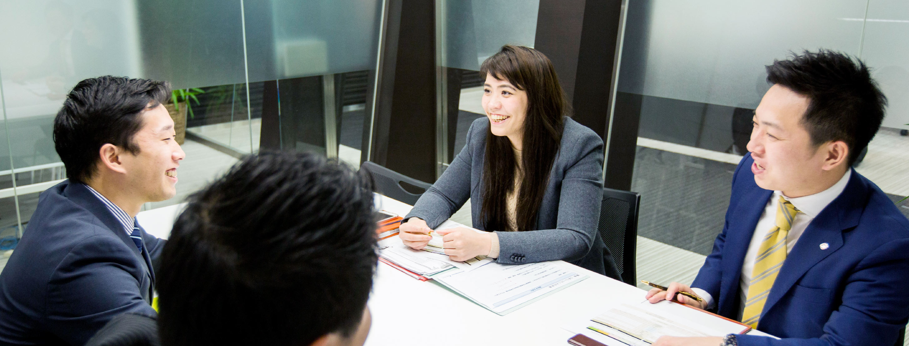

キャンベル ジェシフェル
Campbell Jessifer
2013年 新卒入社
アセットプランニング部 マネージャー
これまで見たこともないところに行けそうだな
アルバイトや前の職場で、大企業は経験していました。一番下の階層ですが、私なりに大企業は見てきたという思いがありました。転職に際しては、企業の規模や業界・業種を問わず、私が興味を抱いた会社の説明会に出ました。その中で一番魅力を感じたのが当社です。
不動産投資の世界を変えると、熱く語ってくれました。「夢のようなことを、本気で言っている」と思いました。同じ働くなら、こういう会社がいいと感じた。経営陣との距離も近く、これまで見たこともないところに行けそうだなと思いました。
将来の不安を解消するという価値提供

｢テレアポは大変」だとよく耳にします。確かにエネルギーはいるけれど、私はあまり大変とは思いませんでした。というのも、私が提供する情報には大きな価値があるからです。
日本の将来を考えたとき、社会保障などの面で大きな不安があることは明らかです。あらゆるデータがそのことを示しています。今後高齢者は、体が動くうちは働くことが求められるでしょう。にもかかわらず、そのことを冷静に受け止め、今から準備をしているという人は多くありません。何も準備をせずに漫然と過ごしてしまうことは、実は人生の大きなリスクです。だから私の提供する情報には、価値があると思うのです。「契約して将来の不安が消えた」という声を聞かせていただくとき、お役に立ったことが実感できます。
「あなたについていく」
仕事を通してお客様の人生に何らかの関わりを持ち、将来の安心に少しでも寄与することができたということは、私にとって尊い経験です。それだけに、一度の契約きりの関係に終わってはいけないと思っています。一つの契約を交わすことは、20年、30年というお付き合いの始まりにすぎません。一度契約したお客様がさらに部屋を買い足してくださることがあります。私はこの買い増しの獲得数では、会社一番ではないかと自負しています。アフターフォローに配慮し、また、お客様の価値観や、大切にしているご家族などのことも知って、同じように私も大切にするということを心がけてきた。その成果ではないかと思います。あるとき「キャンベルさんは信念の人ですね。だから付いていこうと思ったんですよ」とおっしゃっていただいたことがありました。｢値引きをしてくれた｣とか「手続きを迅速に進めてくれた」といった業務上のことではなく、私の仕事に対する考え方や生きていく上での想いなどを見てくれたことを、本当にうれしく思いました。
「ママ社員」の
先頭を切る
私は入社翌年に結婚し、その後出産のために休暇に入り、間もなく復職しました。営業部門で産休に入り、同じ営業部門に戻った社員は私が初めてです。後輩の女性のためにも、こうした働き方に道筋を付けたいと思っています。営業社員はお客様との関係が深いため、出産で長期の休暇を取ることに誰もが不安を感じます。私もそうでした。一定期間、安心して現場を離れることができるような連絡体制、サポート体制が必要であり、そこに私の経験を生かしたいと思っています。また、今後は、育児だけでなく親の介護のために休暇やフレキシブルな働き方を必要とする人が増えるでしょう。介護では男性の力が求められることも多いので、女性社員だけでなく｢お父さん社員｣が、育児や介護をしながら働きやすい会社にしていきたい。その点でも、同僚、後輩の役に立ちたいと思っています。
EOS; include $_SERVER['DOCUMENT_ROOT'] . '/recruit/common/_inc/_footer.php'; ?>